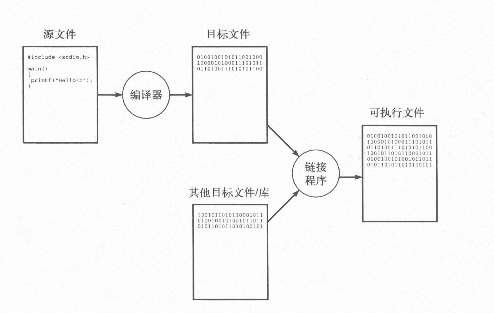

认识计算机科学
Posted on 2019-12-17 in 笔记
1. 什么是计算机科学？
对于汽车的技术，我们称之为“汽车工程”或“汽车技术”，但对于计算机的技术，我们称之为 计算机科学 （computer science）。之所以与众不同，是因为现代计算机是一种通用的机器，具备执行许多任务的潜力，但必须对其进行 编程 （programming）才能挖掘出那份潜力。1
当谈论计算机科学时，我们主要关心的是计算机软件领域，更重要的是抽象问题的解决领域。所以，最好将计算机科学看作是解决问题的科学，而解决问题正巧也离不开计算机。
2. 什么是算法？
由于计算机科学是在计算机的帮助下解决问题的科学，所以我们应该了解 算法（algorithm）的概念，这个概念无论对计算机科学还是针对解决问题的抽象学科来说，都是基础。
要成为一个算法，解决问题的技术必须满足三个基本条件：
- 必须有清楚有效的定义形式
- 每一步都切实可行
- 可以在有限步骤后得到结果
3. 程序设计语言和编译
用计算机解决问题，包括两个概念上的不同步骤。首先是 算法设计 （algorithm design），可以构造一个新的算法或从已有的解决方案中挑选一个。其次是 编码 （coding），使用程序设计语言将算法表达为程序。
在构造新算法时，最好先用自然语言说明这种算法。然后在用类似 C 语言这样的程序设计语言，将算法转换为真实可行的程序。
像 C 语言这样的程序设计语言，都被计算机科学家称之为 高级语言 （higher-level language）的实例。这些语言的设计不受特定计算机影响，而是通用的算法概念，这种概念可以运行于任何一个计算机系统。而在计算机内部，每种计算机都有其能理解的特定的低级语言，称之为 机器语言 （machine language）。这种低级语言由硬件类型决定。
要想让 C 程序这样的高级语言在不同的计算机上运行，我们需要将高级语言翻译为机器语言，这样的翻译工具称之为 编译器 （compiler）。
C 语言的编译过程可以用下图来表示：
- 扩展名为
.c的文本文件，称为 C 语言的 源文件 （source file） - 编译器将源文件转换生成的中间文件，称为 目标文件 （object file）
- 目标文件及其他目标文件（即 库（library），预定义的目标文件）组成在系统上可运行的文件，称为 可执行文件 （executable file）

其中，将独立的目标文件组合成一个可执行文件的过程，称为 链接 （linking）。
4. 编程错误和调试
程序设计语言和人类语言类似，有其规定的 语法规则 （syntax rule）。违反语法规则而产生的错误称为 语法错误 （syntax error）。另外一种错误是，程序符合语法规则，但依然没有给出正确答案，对于这种错误，我们称为 逻辑错误 （bug）。
找出并改正逻辑错误的过程，称为 调试 （debugging），该过程同样使用编译器来完成。
5. 软件维护和软件工程
软件需要维护，通常有两个主要因素：
- 即使经过大量调试，软件依然可能存在错误
- 为满足新的需求，程序功能需要增强
为了便于人们后续理解程序并维护编程，发展出了另一门学科，称为 软件工程 （software engineering）。
参考文献：
- Eric S. Roberts. C 语言的科学和艺术[M]. 翁惠玉等, 译. 北京: 机械工业出版社, 2011. ↩